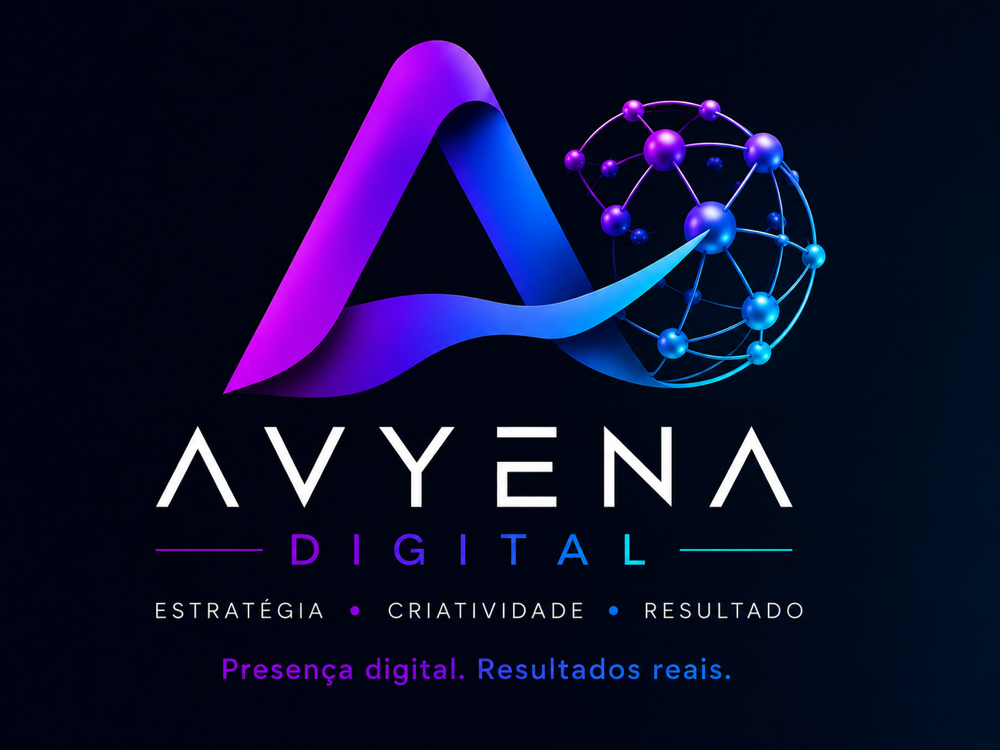

EnglishCriação de sites no Algarve para empresas e negócios locais
A AVYENA é uma agência web no Algarve especializada em criação de sites profissionais e web design para empresas, negócios locais e marcas. Desenvolvemos websites rápidos e responsivos, preparados para comunicar melhor, aparecer no Google e transformar visitas em contactos.
Pedir proposta para o meu site → Ver um projeto real
Uma empresa de criação de sites focada no seu negócio
Cada website é desenvolvido de acordo com os objetivos, público e identidade do negócio. Criamos sites responsivos e landing pages com estrutura clara, chamadas à ação e fundamentos técnicos de SEO, para que potenciais clientes encontrem rapidamente a informação de que precisam e saibam como entrar em contacto.
O que podemos incluir no seu website
Definimos consigo o que faz falta ao negócio e deixamos esse âmbito claro na proposta. Conforme o projeto, podemos trabalhar:
- Páginas de serviços e contactos: informação organizada para que o visitante perceba a oferta e saiba como pedir uma proposta.
- Design adaptado à marca: navegação, texto e imagens pensados para telemóvel, tablet e computador.
- Vários idiomas: páginas em português, inglês ou francês, de acordo com o público do negócio.
- Funcionalidades de gestão: formulários, pedidos de reserva ou uma área de administração quando o projeto o exige.
- Preparação para pesquisa e medição: estrutura de SEO e configuração de Analytics e Search Console, respeitando as preferências de privacidade.
Web design no Algarve pensado para cada setor
Restauração, comércio, serviços, turismo, alojamento local e pequenas empresas têm necessidades diferentes. A estrutura de cada projeto é definida de acordo com o público, os objetivos comerciais e a forma como os clientes procuram informação online, evitando soluções genéricas que não representam a identidade da marca.
Trabalhamos com negócios em todo o Algarve, incluindo Faro, Albufeira, Portimão, Lagos, Loulé, Silves e outras localidades da região. O projeto pode ser acompanhado à distância ou de forma próxima, mantendo um processo simples desde o planeamento até à publicação.
Experiência rápida em telemóvel e computador
Uma grande parte das pesquisas locais acontece em dispositivos móveis. Por isso trabalhamos navegação, legibilidade, velocidade e adaptação a diferentes tamanhos de ecrã, sem esquecer a experiência em computadores e tablets.
SEO e presença digital desde a base
Podemos integrar estrutura técnica de SEO, páginas de serviços, conteúdo local, formulários, Google Business para negócios locais e ligações internas entre áreas relevantes do website. Quando o projeto exige maior visibilidade orgânica, articulamos o desenvolvimento com a nossa estratégia de SEO local no Algarve.
Projeto real: Sun House Algarve
A Sun House precisava de apresentar alojamentos e serviços a dois públicos: hóspedes e proprietários. Desenvolvemos um website em português, francês e inglês, com páginas de imóveis, fotografias, características das casas e pedidos de estadia.
O trabalho incluiu também um painel de administração para gerir imóveis, preços, disponibilidades e pedidos de reserva, com calendário e sincronização iCal. É um exemplo de como o website pode apoiar tanto a apresentação do negócio como a gestão diária.
Ver o projeto Sun House no portfólio · Falar sobre um projeto semelhante
Um projeto que pode evoluir
O website pode começar com uma estrutura simples e crescer com novas páginas, funcionalidades, idiomas ou integrações. O objetivo é construir uma base digital útil para o negócio hoje e preparada para acompanhar a sua evolução.
Criação de sites no Algarve: perguntas frequentes
Quanto custa criar um website?
O valor depende da dimensão do projeto, número de páginas, idiomas, funcionalidades, integrações e nível de personalização. Antes de apresentar uma proposta, avaliamos o objetivo do website e o que é realmente necessário para evitar soluções sobredimensionadas ou páginas que não acrescentam valor.
Quanto tempo demora a desenvolver?
O prazo varia com o conteúdo, complexidade e rapidez das validações. Um projeto simples pode avançar mais depressa, enquanto websites com várias áreas, idiomas, reservas ou integrações precisam de mais etapas de desenvolvimento e teste.
O website fica preparado para aparecer no Google?
Sim. A base técnica pode incluir títulos e descrições adequados, headings, canonical, sitemap, dados estruturados, ligações internas e configuração para indexação. O posicionamento orgânico, no entanto, é um processo contínuo e depende também da concorrência, conteúdo, autoridade e procura existente.
Há acompanhamento depois da publicação?
Podemos continuar a acompanhar o website depois de entrar online, corrigindo necessidades que surjam, atualizando conteúdo e articulando melhorias com SEO, Google Business e outros canais digitais.
O que precisamos para preparar uma proposta?
Envie-nos o nome e a atividade do negócio, o endereço do site atual se já existir, os idiomas pretendidos e o que gostaria de permitir aos seus clientes: conhecer serviços, pedir um orçamento ou solicitar uma reserva. Se tiver uma data em mente, indique-a também. A partir daí, alinhamos consigo as páginas e funcionalidades necessárias.
Serviços relacionados
Um website pode ganhar mais força quando está alinhado com SEO local, Google Business, branding e identidade visual, publicidade digital e soluções digitais adaptadas ao negócio.